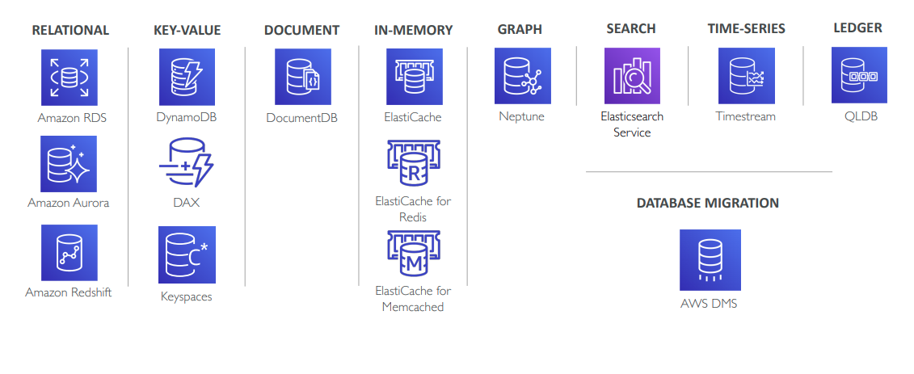
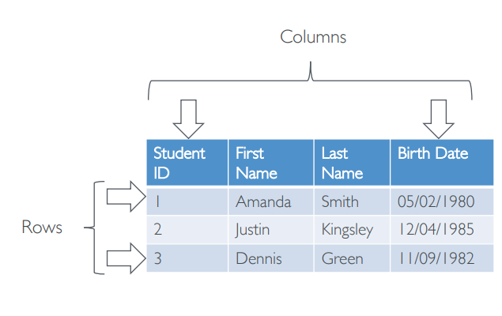
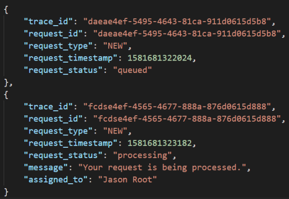
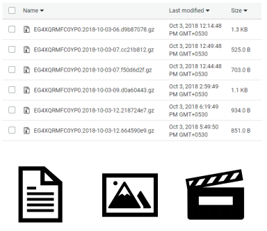
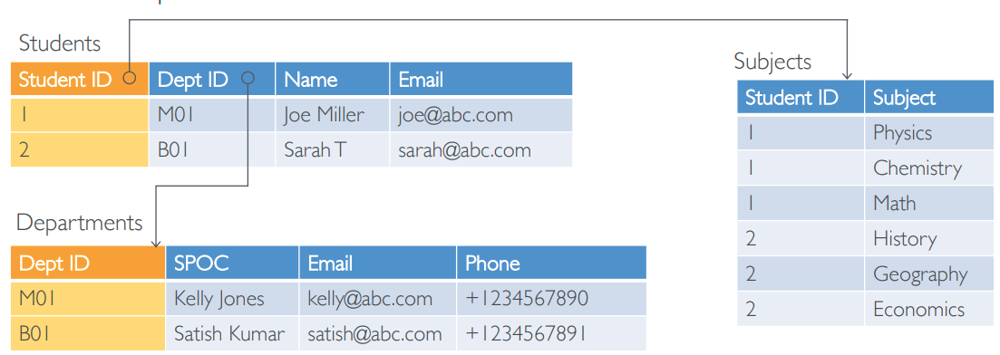
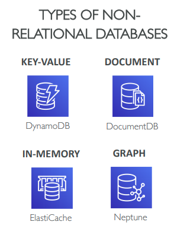

AWS là 1 cloud provider hiện tại đang đứng số 1 với thị phần ổn định 33% trong giời cloud service. Đây cũng được coi là thì phần kỷ lục. Với việc CEO của AWS Service lên nắm quyền Boss của Boss của cả hệ sinh thái Amazone. Tương lai, AWS Service chắc chắn sẽ càng được quan tâm nhiều hơn đó.
Ae làm trong nghề IT này, chắc chắc có 1 thành phần cực kỳ quan trong đó là Database. Vì vậy hôm nay, mình sẽ giới thiệu sơ qua về database trong AWS cloud, coi như là mở bát và ở các phần sau mình sẽ nói về các service liên quan tới database của hệ sinh thái này nhé. Ok let’s go…

Có thể thấy từ hình, đa số các loại database phổ biến đều được AWS cung cấp service. Từ việc này giảm nhẹ gánh cho chúng ta phải xây dựng, quản lý, cũng như đưa ra các usecase cho từng dự án.
1. Mục đích chúng ta cần phải tập trung về Database
- Các khó khăn gặp phải
- Với bài toán big data, đáp ứng nhu cầu về volume, tốc độ và về việc tăng đột biến data
- Hàng triệu requests trên giây
- Low latency hoặc bài toán global users
- Mặc dù relational database vẫn đang phát triển, nhưng nó không còn đáp ứng đủ tất cả các nhu cầu của chúng ta
- Các modern application, thường sẽ mix các loại databases để phù hợp với n bài toán họ gặp phải
- Tìm và sử dụng database phù hợp với các mục đích,
right database for the right job
2. Chọn đúng database như thế nào
Chúng ta có nhiều loại databases được quản lý bởi AWS mà có thể lựa chọn. Câu hỏi chọn đúng Database nó còn liên quan đến kiến trúc của hệ thống như thế nào. Một vài ví dụ đơn giản cần quan tâm, bạn cũng có thể coi nó là check list để quan tâm nhé:
- Quan tâm các thông số như Read-heavy, write-heavy hoặc balanced workload? Through out? Nó sẽ thay đổi như thế nào, nó cần scale hoặc fluctuate (dao động) trong 1 ngày như thế nào?
- Bao nhiêu lượng data được lưu và lưu trong bao lâu? Nó sẽ tăng hay phát triển lượng data đó như thế nào (grow)? Kích thước trung bình của các record, object? Và nó bị access như thế nào?
- Data durability (yêu cầu về tính bền bỉ của dữ liệu)?
- Latency requirements (yêu cầu về độ trễ)? Concurrent users (lượng user truy cập đồng thời vào hệ thống)?
- Data model (đánh giá được độ phức tạp của record, object)? Query data như thế nào? Có yêu cầu join? Có yêu cầu structured (cấu trúc)? Hay yêu cầu semi-structured (có thể hiểu là không ràng buộc schema => no-sql), un structured?
- Hay những câu hỏi để lựa chọn chính xác database với các yêu cầu như: Strong schema? More flexibility? Reporting? Search? RDBMS/NoSQL?
- Về Chi phí (license hoặc không)? Hay vấn đề chuyển đổi từ opensource lên cloud native DB. Ví dụ Aurora, DynamoDB?
3. Vài thứ cơ bản về database
3.1 Data
- Data: là 1 tập hợp giá trị hoặc thông tin
- Database: là 1 tổ chức các tập hợp data này
- Có 3 loại Data:
- Structured
- Semi-structured
- Unstructured
Nói chung mỗi loại data này tương ứng với các loại database khác nhau, phù hợp với các bài toán khác nhau. Chúng ta thường sẽ làm việc kết hợp với nhiều loại data.
Structured Data

- Điển hinh cho việc lưu trữ trong các table. Các table này được định nghĩa trước các cấu trúc của bảng (schema). Là Relation Database.
- Phù hợp với mục đích công việc là OLTP (transactional) và OLAP (analytical)
- Đặc trưng của Relation Database (index tables được link tới các foreign key)
- Phù hợp với các complex queries (truy vấn phức tạp) và analytics (công việc phân tích). Ví dụ: việc join các complex table với nhau để lấy thông tin.
Semi-structured Data

- Tổ chức Data nhưng lại không ràng buộc về cấu trúc (không fix cứng schema)
- Schema chứa cấu trúc của data
- Đặc trưng là non-relational database (dữ liệu không quan hệ)
- Phù hợp với Big Data và ứng dụng cần low latency
- Ví dụ: JSON, XML
Unstructured Data

- Không tổ chức Data
- Không định nghĩa schema. Ví dụ: documents, photos, videos, music, files, text message,…
- Điển hình là file system, data store hoặc data lake như S3, google drive.
3.2 Relation Database
- Predefined schema (Có định nghĩa schema trước)
- Tuân thủ ACID và hỗ trợ JOIN
- Phù hợp với usecase: OLTP (transactional) và OLAP (anaytical)
- Ví dụ: MySQL, PostgreSQL, MariaDB, Oracle, Microsoft SQL Server
- AWS service thì có:
- AWS RDS và Aurora cho OLTP
- Redshift cho OLAP
Đặc trưng bởi nhiều table được quan hệ ràng buộc với nhau thông qua khóa ngoại.

Table Index
- Relational databases được write và query dựa trên SQL (Structured Query Language)
- Để tăng hiệu quả về performance khi truy vấn, ta cần thêm index phù hợp cho bảng, tất nhiên nó sẽ có ảnh hưởng tới việc write
- Mặc định primary key thì đã được đánh index
- Secondary indexed có thể được thêm với bất kỳ field nào.
ACID
Giải thích qua về việc tuân thủ các nguyên tắc ACID
ACID = Atomicity, Consistency, Isolation, and Durability
- Atomicity: tính nguyên tử.
all or nothingĐảm bảo với 1 transaction thì tất cả các tiến trình được thực hiện hoặc không tiến trình nào được thực hiện. - Consistency: Tính nhất quán. Đảm bảo với 1 transaction đảm bảo tính hợp lệ của dữ liệu khi cập nhật database. Nếu dữ liệu đưa vào database mà như kiễu dữ liệu không phù hợp, không thỏa mãn constraint, rule, trigger, nhầm table,… thì transaction đó sẽ bị rollback, dữ liệu ở database vẫn được giữ nguyên lúc chưa thay đổi. Chính vì vậy dữ liệu từ transaction phải hợp lệ, đúng đắn, nhất quán với những constraint, cấu trúc table, rule…được định nghĩa hay khai báo từ phía database.
- Isolation (Tính cô lập): Mọi thao tác của 1 transaction đều phải được cô lập, tránh liên quan transaction khác. 1 transaction này thì không thể đọc dữ liệu ở database mà transaction kia đang update. Nếu 2 transaction đang làm việc bất đồng bộ với nhau thì sẽ “giả vờ” như đang làm việc tuần tự, 1 transation này sẽ chờ cho đến khi transaction kia commit thành công thì mới bắt đầu thực hiện.
- Durability (Tính bền bỉ): Khi 1 transaction update dữ liệu thành công, thì thay đổi của dữ liệu đó phải được đảm bảo lưu trữ ở trạng thái bền vững, vĩnh viễn,…Và ngay cả khi database bị crash, lỗi hay hệ thống restart thì dữ liệu ở database vẫn luôn ở trạng thái thay đổi mới nhất, chính xác.
Có 1 sự khác biệt là, nếu bạn tuân thủ ACID trên DB thì ứng dụng của bạn bắt buộc, hoặc là có không muốn cũng phải tuân thủ theo. Ví dụ:
- Nếu bạn sử dụng NoSQL (Mongo, Dynamo). Ứng dụng của bạn có thay đổi data giữa 2 bảng có quan hệ thông tin với nhau. Ứng dụng của bạn nếu muốn cũng có thể overide data trên 2 bảng làm sai lệch quan hệ.
- Nếu bạn sử dụng SQL (Mysql) thì với table được định nghĩa quan hệ trước. Thì bạn không thể overide làm data sai lệch về quan hệ. DB sẽ trả về hành động error cho bạn.
3.3. Non-Relational Database

- Phù hợp với semi-structured và unstructured data
- Data được lưu không cần chuẩn hóa
- Phù hợp với ứng dụng Big Data. Big data = High Volume, High Velocity, High Variety
- Phù hợp với ứng dung cần low-latency (high-speed)
- Flexible data model
- Không phù hợp với ứng dụng OLAP (analytical)
BASE
NoSQL thì tuân thủ BASE
BASE = Basically Available Soft-state Eventually-consistent
- Basically available – Tính sẵn sàng ở mức cơ bản: đảm bảo tính khả dụng cho dữ liệu, có thể không nhận được dữ liệu được yêu cầu, dữ liệu có thể ở trạng thái thay đổi hoặc không nhất quán.
- Soft-state – no consistency guarantees, data state may change không đảm bảo nhất quán, trạng thái dữ liệu thay đổi theo thời gian
- Eventually consistent – Cơ sở dữ liệu sẽ trở nên nhất quán và đồng bộ tại một thời điểm nào đó trong tương lai.
- Use cases: phù hợp với yêu cầu về mặt high performance (hiệu suất cao) hơn về strong consistency (tính nhất quán cao)
3.4. So sánh giữa Relational và Non-Relational Database
| Relational (SQL) | Non-Relational (NoSQL) |
|---|---|
| Data được lưu trong các tables, quan hệ với nhau bằng foreign key | Data được lưu trong các collection hoặc các cặp key-value |
| Tuân thủ ACID | Không tuân thủ ACID, tuân thủ BASE |
| Fixed cứng về schema (structured data) | Flexible schema ((Semi-structured và unstructured data) |
| Vertical Scaling | Horizontal Scaling |
| Sử dụng SQL | Sử dụng Object dựa trên APIs |
| Phù hợp với OLTP và OLAP | Phù hợp với OLTP (web/mobile apps) |
4. Tổng kết
Trên đây là bài giới thiệu về database trong AWS, ở các phần tiếp theo mình sẽ tập trung vào các service phổ biến của AWS. Cảm ơn mọi người đã đọc
Đây là Blog cá nhân của MinhHungTrinh, nơi mình chia sẻ, lưu giữ kiến thức. Nếu các bạn có góp ý, thắc mắc thì vui lòng comment bên dưới cho mình biết nhé. Mình luôn là người lắng nghe và ham học hỏi. Các vấn đề đặc biệt hoặc tế nhị mọi người có thể gửi email tới minhhungtrinhvn@gmail.com. Cảm ơn Mọi Người đã đọc Blog của mình. Yolo!